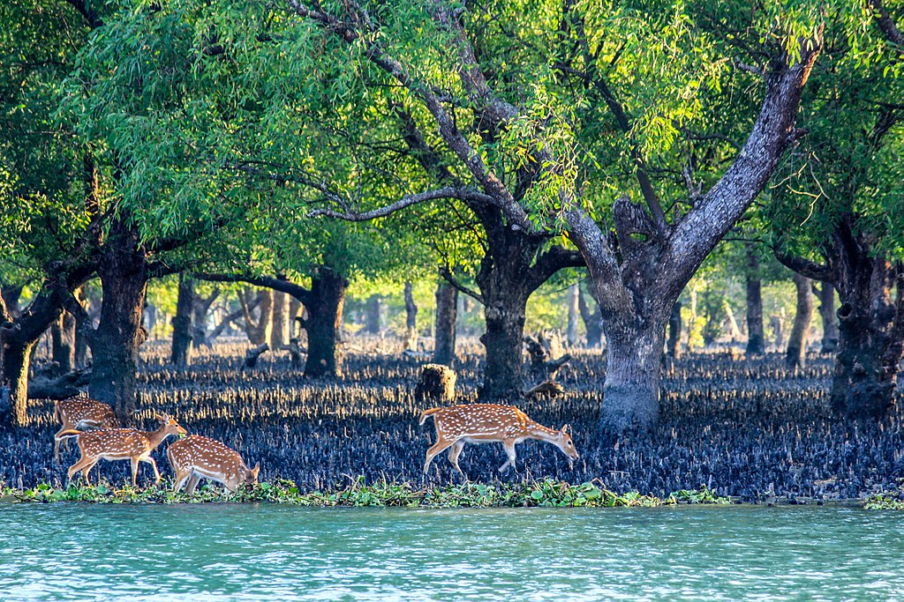

The Sundarbans mangrove forest is one of the largest forests in the world
and the beauty lies in its unique natural surrounding. Four protected areas in the Sundarbans
are enlisted as UNESCO World Heritage Sites. These four areas are Sundarbans National Park, Sundarbans West,
Sundarbans South and Sundarbans East Wildlife Sanctuaries.

Beauty_of_Sundarban
It is part of the Sundarbans on the Ganges Delta, and adjacent to the Sundarban Reserve Forest
in Bangladesh. The mysterious mangrove forests are home to the Royal Bengal Tiger and several other species of
animals. Sundarbans is a replica of the miracles of nature and shows us the importance of the ecosystem.
A trip to Sundarbans is thus, a perfect escape from the hectic life into the lap of Mother Nature.
Apart from the natural beauty, the non-communal traditions of the local population in the region gives
a strong message to take away home.
Sundarban is diffusion of 54 islands, rooted in Mangrove vegetation. The existence of these
islands is a worrisome cause for the nature lovers and conservationists as even the main islands are fast
disappearing under the rising seawater levels and global warming. Four islands have completely disappeared
under water, and another ten are at the risk of submersion because of increase in river water flowing
from the Himalayas from global warming.